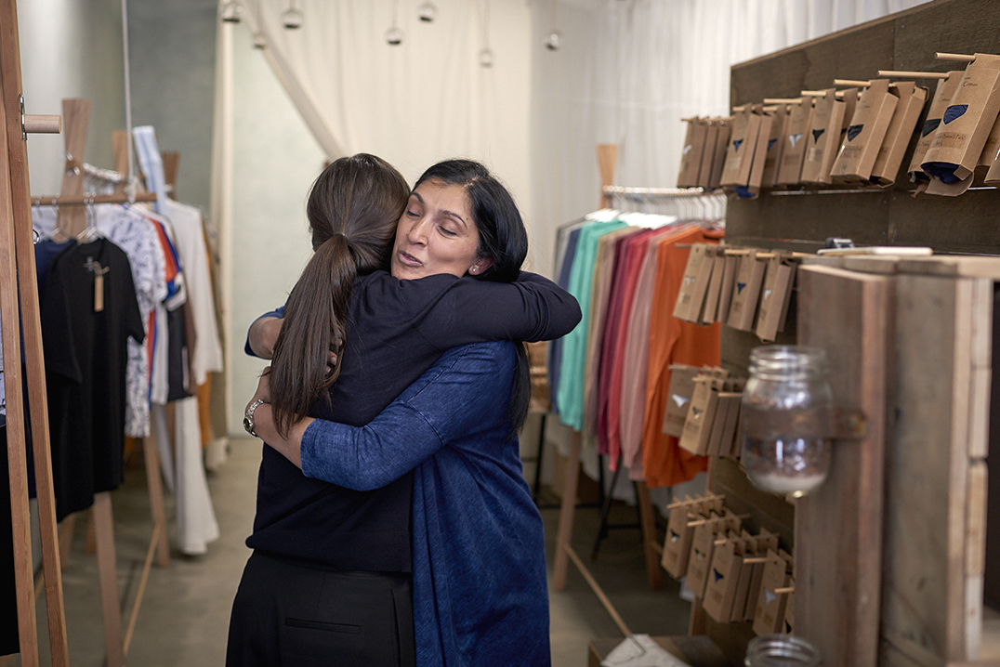

Bowerbirds - The Boweress
Knowledge brings power. Power brings choice. Choice brings change.
7 February, 2018
Tell us about your background in International Public Health and your experiences working in NGO’s – as this is not traditionally the beginning to a career in textiles…?
So it’s been a really amazing journey. My whole life has been in health. I started off at the children’s hospital then went into health promotions, I loved that teaching side of things. From there I thought I’d like to go international. My mind was set on Africa but I was sent to India. So I was in India for the first couple of years and then Bangladesh. It was a time of exposure, things that I didn’t even stop to question. Back then it was all about genetically modified seeds yet there was an organic movement but more in food. I was placed in agricultural belts which is unfortunately known as suicide belts and each had stories, stories that broke me, shattered me but made that evolution and I thought what can I do to change this and shake the way things are done.
Like you said, I didn’t know anything about the textile industry, I was in a lovely little silo of health but it’s like an onion, you’re just peeling back the layers, you see lung health issues, pesticide poisoning , really really sad shocking stories about suicide and the impact of these suicides on children. All the statistics are there via the WHO but we don’t talk about it. So all of these things stayed with me and I couldn’t not do anything.
Back then the movement was lead by europe. The GOTS certified movements, I’m so grateful that GOD exists. I’m really passionate about our earth, our people and especially children, we are really strict about no child labour and ensuring that both boys and girls go to school.
Conscious consumerism is a really beautiful movement, people are having that dialogue, asking those questions, what am I putting on my skin? What am I eating?
One big thing we’ve seen in the past couple of months is people with skin conditions/ sensitivities, from newborns right through to the older demographic coming in and asking for guidance. Even just the smell can affect sleep patterns and all of this is affected by what goes in the dyes. Unfortunately, in Australia there is no legislation to say what dyes or colours are in your clothing. It only takes 6 seconds for things to go into your bloodstream. All these imbalances in your health could quite highly likely be linked to what we’re putting on our skin.
What are the central pillars of the brands ethos, power, knowledge and choice?
There’s the earth aspect and the human aspect and this is right from seed to shelf. And one thing that I firmly believe is even if it’s just small steps, so you know your pillowcase, what you are sleeping on and what you’re breathing in, these small steps of change can make a huge difference.
Why is fair trade an important consideration when we are shopping for any product?
So firstly I am going to flesh out organic versus non organic. With organic, we are ensuring that there is no genetically modified seeds used, there’s no toxic pesticides or sprays, there’s no insecticides, no toxic dyes, so basically from a chemical angle, nothing toxic is going into it from seed to finished product on the shelf.
In regards to fairtrade, Australia and New Zealand are big fans. We’ve gone with certification in fair trade because people are comfortable when they see that symbol. They know, ok so there’s no child labour and fair working conditions. So the big thing for us is fair working conditions, farmers are getting the right amount of money for the cotton that they’re producing and on top of that, the premium on top of that is in villages, what infrastructure can be set up…but the villagers decide. The last initiative we were involved with was a school for girls because in India mostly the boys will go to school especially in rural areas because they’ll take over the farms.
We really like the notion of sustainable luxury, can you tell us more what that means?
At Bhumi we believe that knowledge brings power, power brings choice and the choice will bring the change. The word organic is interesting as people automatically think higher price point. What we try to promote is redefining the word luxury. Luxury for any individual is different, it could be the soap you use , that moment you have before you go home, taking that time, that moment is luxury to me. So it’s about creating that different way of looking at luxury. I’m doing this for me, I’m doing it for the planet and I’m doing it for humanity. So from this angle, I love this new definition of luxury that it’s about your space, your sacredness, your sanctuary, small choices and small steps that you can make to get that in your life. Even down to music, having music in your bathroom with a candle and you can look to the candle, is it natural? Is it good? So this new definition of luxury is how I’d like to see Bhumi and having these fabrics that make you question where was it made? How was it made? Who made it? And then let that shape your choice
Takes us through some of your favorite Bhumi Products
The Bedroom is such a sanctuary; for thinking, for life, for love, for rest. We provide different khadi that was Mahatma Gandhi’s spin or weave, and this is important to us because we are passionate about one of Gandhi’s quotes “There is no beauty in the finest cloth if it makes hunger and unhappiness” And this quote has been the very foundation of our business. And we have his weave in both our bedding and in our towels. The weave is both a great temperate all year round, as well as being an important cornerstone. It’s what we need to do as humans to help each other and the earth. So that Kavi is the weave for humanity.
That’s why the bed is so important, we spend so much time there, time sweating in it, we are warm in it and we have to listen to who our body reacts to the sheets and to the bedding. Our body will say if we’re not liking it.
Jersey is one of our most popular products and it’s literally sold out. Jersey is like sleeping in your favourite t shirt. Its delicious. It’s so nice that when it goes in the washing machine, you wait eagerly for it to be finished. Bedding is the core of the brand. Because it is about the time that you spend there and there are so many impacts health wise.
Talk us through the colour palette
We started with bold colours. Like Tumeric. And no one but my family likes the tumeric. So we have gone with key colours now like the ocean, the sky and the earth. I still relate our colour scheme back to the elements. And a lot of people identify with the cooling colour schemes or the sky and the oceans. It’s about being able to dive into our dreams.
So Tell us about who works with you, and how all these great products come to be
I have been very fortunate over the years to work with a great team both here in Australia and in india. It took trial and error. Early on many mistakes were made with sampling, We’ve made samples that didn’t fit anyone, but now we have found our rhythm.
Could you explain moisture wicking and your fair trade range:
So what we do is we repurpose textiles that are going to landfill. So some of these athleisure wear pieces are one offs, they are based on a single piece of fabric, an offcut. So upcycling is very important to us. So you will only see a few of these pieces, and then that’s it. For our moisture wicking what we use is recycled PET bottles, and you will find these on display in our windows. We do not use all PET, it’s a part of the material combination – it’s about the environment factor. We’re about having the moisture wicking in the sports wear and upcycling at the same time.
How Many of your workers are female?
In Australia, currently all but one of our employees are female. We love both the earth and the human connection that comes from building strong working relationships. In our team, most are women. And in my design team they are all girls. The good thing is that their children are supported in terms of going to school, and receiving maternity leave, so we are trying to be a big part of positive change.
Is the the cotton industry traditionally women based?
It’s three parts, it’s male, it’s women and it’s children. Children have very fast hands for cotton picking, and we are talking children as young as 4 years of age. So then there is the untold story of child bonded labour. For example the debts of GM seeds which can be paid are paid off with children. You have my children, and you have my family and the impacts of these practices are shocking. This is what I saw, I saw children taken from their families and put into the fields because they can get into the bushes quickly with their fast fingers.
Then you have women. And It’s about the pesticides. The women are in the field, mainly in bare feet, and what we need to consider is the feet have some of the thinnest skin on the whole body. The pesticides are going straight into their bloodstream. We are talking 6 seconds, and it’s in their bloodstream. And unfortunately we came across a lot of women with stillborn babies or babies who had problems once they were born. It’s just wrong, and it’s wrong on too many levels.
India, China and Turkey and the USA re the large producers of cotton in the world. However we need to take the USA out as America’s organic movement is making significant ground. It’s really changing the game.
And then men. The heads of families are the males, but what is a sad growing number is farmer suicides. The male heads of the families are trapped by the debt and don’t know how to pay it off. And then the spin off of these suicides effects every woman in that family in ways we don’t need to describe. The suicide alone is devastating. And then we have to consider the subsequent impact upon every generation after that.
When I spent time in India. It broke me. It shattered me. But it was like a regrowth. A renewal or rebirth. And that’s how the brand started, as an attempt to shift something in the movement.
I went on a trip to NY and experienced a big conference about what some the the leading sports brands were doing to combat some of the industrial practises and what’s next in accountability. And it’s all greenwashing, it’s about social and corporate responsibility.
And what about Water… How is water treated in India?
In India you see the water ways, and you see the spill off and it’s even worse than a waterway should look. And people are drinking and washing and just living their lives in it. Some amazing US based photojournalists are covering it like Shaun Gallagher, but it’s really not been given enough air time. They are haunting pictures, but they show the truth. Look at Shaun Gallagher because what I love about him is he has many facets to a single topic. He has done one on textiles and on computers, and all the waste in this industry. He is heartbreaking but thank god for him.
How do you tell your message?
For us it’s been a both interesting and challenging journey on how to tell our message. When I started it was about telling everyone, and putting the stories straight to them. But people get upset, they cannot handle it. I’d get people walking out of the shop, it was too much for me. Now I have learnt to wait for the question. It’s the journey of learning how to marry the story with the retail space an environment. How do you market that side of the truth ? The information is accessible, It’s on our website. It’s a balance act, a fine balance. I love this too much to never not talk about it, so when I step out and look back on our positioning we need to understand that we have different people thinking at different levels and people are at different stages of their lives and we need to respect this. We like to plant the seed of organic. It’s about starting a dialogue. I love dialogue and I love keeping it open. Because we need to talk about it.
How do you create your own personal sanctuary?
Out of the home, it’s the ocean. She soothes me, she calms me, she centres me. Anything ocean, any sea creatures. It’s about creating that sanctuary for yourself in your life, wherever you are. The textile industry is such a big part of our lives…In the home, it’s the bedroom it’s where I read, it’s where the little one is around. I like to know that when we come home and cross the threshold we leave other things at the door, whatever it is that we are exposed to, whether its words or chemicals – we leave them outside. And at home it’s about love, and peace, and small luxurious choices that can create the atmosphere for calm, and peace and life. The word sanctuary is so sacred. It’s something that I would like to help people have in their homes. Bhumi will help provide choices. Bhumi is a connection of so many things and to be able to provide this balance at home is rewarding. At Bhumi we regard everyday as a new opportunity to help spread the message and awareness.
Thank you Vinita for your time, I’ve been left speechless and in tears. To support the amazing journey Vinita and her community is on visit BHUMI
“Tears are what falls when words can’t say what you want them to”
